Bungotakada
Bungotakada · Oita
Bungotakada
Highlighted on the Oita map.
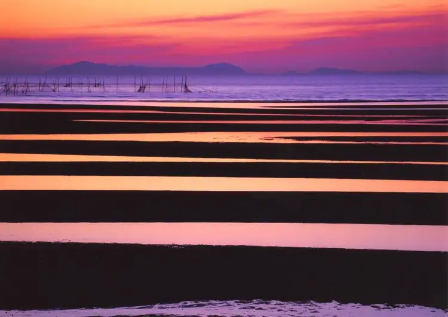
Dining
チャイハナ海花
Chaihana Umi Hana
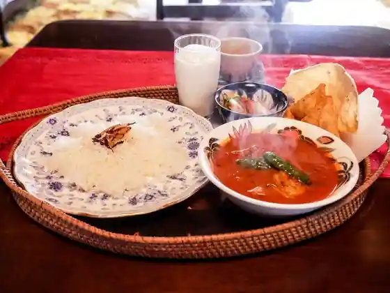
十割蕎麦 ゑつ
Juu Wari Soba Etsu
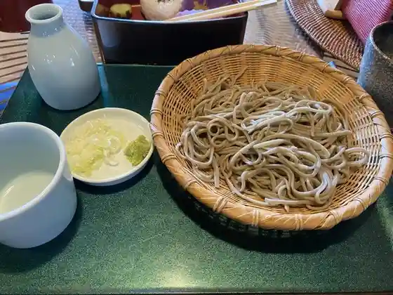
そば処 響
Soba Tokoro Kyou
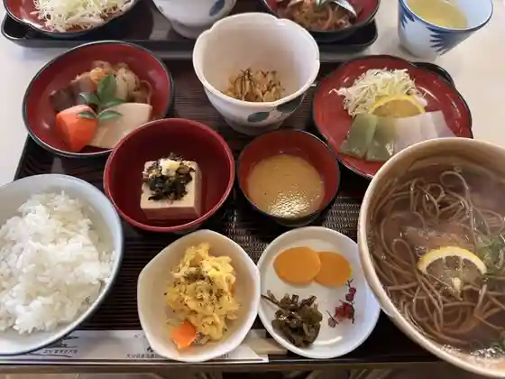
榧の木
Kaya No Ki
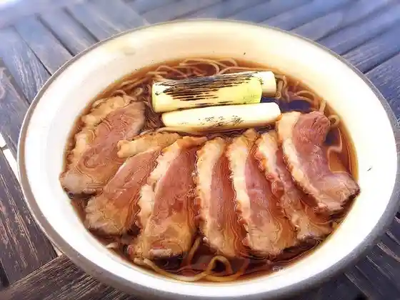
SOBA CAFEゆうひ
SOBA CAFE
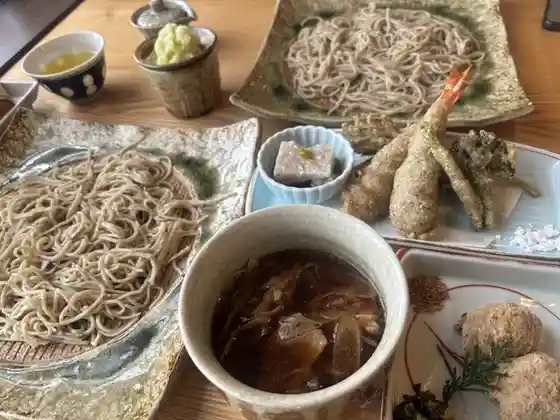
胴搗自家製粉 手打蕎麦 地慈
Dou Tou Jikasei Kona Teuchi Soba Chi Ji
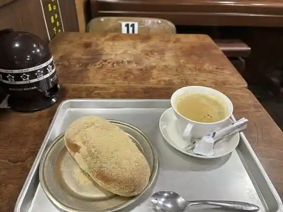
カフェ＆バー ブルヴァール
Kafe & Baa Buruvaaru
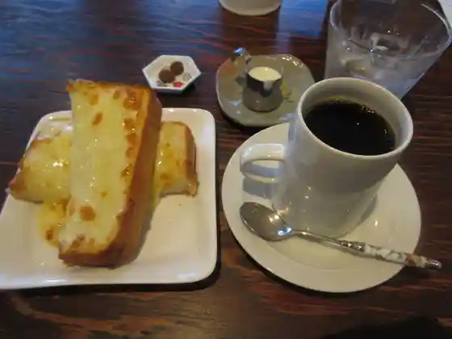
ブラジル珈琲舎
Burajiru Koohii Sha
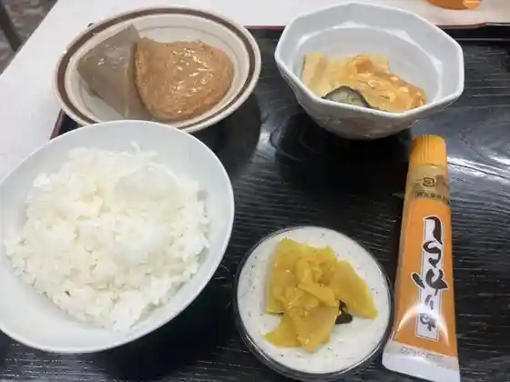
大寅屋食堂
Dai Tora Ya Shokudo
アルフォンソ 昭和の町店
Arufonso Shouwa No Machi Mise
美のり
Bi Nori
翔
Shou
蕗薹
Fuki Aburana
中華そば 山猫
Chuuka Soba Yamaneko
こっとん村
Kotton Mura
そば 六郷
Soba Rokugou
山翠荘
Yama Sui Sou
みちくさ
Michikusa
うなぎ処 志おや 豊後高田支店
Unagi Tokoro Kokorozashi Oya Bungotakada Shiten
ホテルAZ 大分豊後高田店
Hotel Az Ooita Bungotakada Mise
小倉一色亭
Ogura Isshoku Tei
菓子禅高田屋
Kashi Zen Takadaya
肉のかなおか
Niku Nokanaoka
杵や
Kine Ya
森川豊国堂
Morikawa Toyokuni Dou
国産小麦と天然酵母のパン工房ヒビノ
Kokusan Komugi To Tennen Koubo No Pan Koubou Hibino
からあげ壱気
Karaage Ikki
瓦藍洞
Kawara Ai Hora
山田屋
Yamada Ya
スパイスカレー 善
Supaisukaree Zen
スーパーかがち
Suupaa Kagachi
スーパーバリュー またま
Suupaabaryuu Matama
一棟貸しの宿 みわとそら
Hitomune Kashi No Yado Miwatosora
旬彩 南蔵
Jun Sai Minami Kura
久留米ラーメン 青龍軒
Kurume Raamen Seiryuu Ken
モンブラン
Monburan
はんどめいど
Handomeido
CAFEちいばす
CAFE
サンウェスタン
San'uesutan
四季菜
Shikisai
大王府
Daiou Fu
肉処 和
Niku Tokoro Wa
AMARI
AMARI
Pizzeria NOVE
Pizzeria NOVE
昇龍
Noboru Ryuu
喜久庵
Yoshihisa Iori
カフェ かしゅ・かしゅ
カフェ かしゅ・かしゅ
Awasima CAFE
Awasima CAFE
Okiraku Dining 呑もうっちゃ
Okiraku Dining
fiore
fiore
ラーメンなにわっこ
Raamen Naniwakko
麺屋さいこう
Men Ya Saikou
レストラン カメリア
Resutoran Kameria
食事処 まんぞく
Shokuji Tokoro Manzoku
城下町
Joukamachi
天ぷら志乃
Tenpura Shino
ビストロげってん
Bisutoro Getten
割烹のがみ
Kappou Nogami
ロングヒル
Ronguhiru
旅館梅乃屋
Ryokan Umeno Ya
カフェ&バー フタゴ
Kafe & Baa Futago
味処 豊後
Ajidokoro Bungo
Cibo vegetariano Fuyou
Cibo vegetariano Fuyou
tree
tree
洋食屋チリン
Youshoku Ya Chirin
ふじやからあげ 真玉店
Fujiyakaraage Matama Mise
たこ一
Tako Ichi
CAFEキブン
CAFE
居酒屋 五色矢
Izakaya Goshiki Ya
アジアンキッチン didi
Ajiankitchin Didi
ちょいとそこまで
Choitosokomade
中之島旅館
Naka Yuki Shima Ryokan
割烹楓
Kappou Momiji
駅前商店 和
Ekimae Shouten Wa
甘味末広屋
Amami Suehiro Ya
農家レストラン 蔵人
Nouka Resutoran Kurabito
長崎鼻ビーチリゾート
Nagasaki Hana Biichirizooto
お食事処 ふきの里
O Shokuji Tokoro Fukino Sato
串揚げ専門店 彩庵
Kushi Age Senmonten Sai Iori
ひじり
Hijiri
ムーンサン
Muunsan
咲くら
Saku Ra
出会いの里
Deai No Sato
ヨーロッパドーナツ
Yooroppadoonatsu
安田酒店
Yasuda Saketen
蕗邨
Fuki Mura
中華料理 龍雲
Chuukaryouri Ryuuun
鬼会の里
Oni Kai No Sato
ふるさと寿司
Furusato Sushi
cafe Fuyou
cafe Fuyou
こけしの実
Kokeshino Mi
ランチ・せんべろ居酒屋 未夢来
ランチ・せんべろ居酒屋 未夢来
焼肉の愛次郎
Yakiniku No Aijirou
うちだ屋 豊後高田店
Uchida Ya Bungotakada Mise
お菓子の菊家 豊後高田店
O Kashi No Kiku Ie Bungotakada Mise
豊島
Toyoshima
劇団バル ナンバー50
Gekidan Baru Nanbaa 50
韓楽
Kan Raku
ほっともっと 豊後高田店
Hottomotto Bungotakada Mise
街かど
Machi Kado
寿し源
Hisashi Shi Gen
焼肉一善
Yakiniku Kazuyoshi
あん庵
An Iori
工房 あめのちはれ
Koubou Amenochihare
平清水
Taira Shimizu
レコヤキ グルーヴ
Rekoyaki Guruuvu
幾久屋
Kiku Ya
玉津まちの駅 夢むすび
Tamatsu Machino Eki Yume Musubi
パステレリア 三毛猫堂
Pasutereria Mikeneko Dou
海鮮居酒屋 ももだ
Kaisen Izakaya Momoda
THE豊後高田酒場 ヒミツ基地
The Bungotakada Sakaba Himitsu Kichi
からあげ未紗
Karaage Misa
お酒屋さんのお総菜コレコレ
O Sakaya Sannoo Souzai Korekore
LAWSON 豊後高田新町店
LAWSON
宝くじ茶屋
Takarakuji Chaya
みやまち酒場 恩昇
Miyamachi Sakaba On Noboru
沖縄料理 食べ飲み処 よし多家
Okinawa Ryouri Tabe Nomi Tokoro Yoshi Ta Ie
おかん
Okan
そば処いのちき
Soba Tokoro Inochiki
大きな樹
Ooki Na Ki
Peco
Peco
Le ciel
Le ciel
お食事処さつき
O Shokuji Shosa Tsuki
ハニースパイス カフェ
Haniisupaisu Kafe
くにさき六郷温泉 花いろ温泉
Kunisaki Rokugou Onsen Hana Iro Onsen
やきとり豊島
Yakitori Toyoshima
夷谷温泉
Ebisu Tani Onsen
ずい
Zui
あげこう
Agekou
おひさま工房831
Ohisama Koubou 831
さとみ屋
Satomi Ya
アーバンフォレスト やわらぎ昭和の町店
Aabanforesuto Yawaragi Shouwa No Machi Mise
はいから庵
Haikara Iori
BAR Naughty
BAR Naughty
田舎んそば
Inaka Nsoba
明治屋
Meijiya
リアル ポイント
Riaru Pointo
粟嶋茶屋
Awashima Chaya
アルフォンソ 本店
Arufonso Honten
日名子鮮魚店
Hinako Sengyoten
ブレッドハウス 高田店
Bureddohausu Takada Mise
彩路
Sai Michi
味楽園
Aji Rakuen
Bull parfait home
Bull parfait home
落花生いさご 宇栄喜号本舗
Rakkasei Isago U Eiki Gou Honpo
食道園
Shokudo Sono
豊前名物ホルモン なじみや 豊後高田店
Buzen Meibutsu Horumon Najimiya Bungotakada Mise
HINATA cafe
HINATA cafe
うめおとまさこ
Umeotomasako
伊藤宝来堂
Itou Hourai Dou
恵比寿
Ebisu
木もれ日゛
Ki More Nichi "
バイキングレストラン志高 大分豊後高田店
Baikinguresutoran Shidaka Ooita Bungotakada Mise
百種
Hyaku Tane
御菓子司 渕松月堂
O Kashi Tsukasa Fuchi Matsuzuki Dou
寿し常
Hisashi Shi Tsune
カポラコーヒー
Kaporakoohii
軽食喫茶 みやまち
Keishoku Kissa Miyamachi
宇栄喜号製菓本舗
U Eiki Gou Seika Honpo
焼き鳥 佐むら
Yakitori Sa Mura
モロゾフ トキハインダストリーアイム高田店
Morozofu Tokihaindasutoriiaimu Takada Mise
まるじゅう製菓
Marujuu Seika
荘園ほたる
Shouen Hotaru
お持ち帰り専門店焼き鳥 弁当 とりや
O Mochikaeri Senmonten Yakitori Bentou Toriya
寿し勝
Hisashi Shi Kachi
紅葉館
Kouyou Kan
Noka Restaurant Kurabito
Noka Restaurant Kurabito
Ryoan Fukinoto
Ryoan Fukinoto
Minori
Minori
Cotton Mura
Cotton Mura
Meet Kanaoka
Meet Kanaoka
Syunsai Minamigura
Syunsai Minamigura
Sobadokoro Hibiki
Sobadokoro Hibiki
Juwari Soba Etsu
Juwari Soba Etsu
Jokamachi
Jokamachi
Otoraya Shokudo
Otoraya Shokudo
Unryu
Unryu
San Western
San Western
Izakaya Chosan
Izakaya Chosan
Kokura Isshiki Tei
Kokura Isshiki Tei
Takada Soba Kakeru
Takada Soba Kakeru
Mont Blanc
Mont Blanc
Shioyatakadashiten
Shioyatakadashiten
Mirakuen
Mirakuen
Kikuhachi
Kikuhachi
Umineko
Umineko
Cafe Cache Cache
Cafe Cache Cache
Restaurant Camelia
Restaurant Camelia
Ryoko Coffee Shop
Ryoko Coffee Shop
Fuchishogetsudo
Fuchishogetsudo
Toyogo Takada Soba Dojo
Toyogo Takada Soba Dojo
Sugiya
Sugiya
Ramen Yu
Ramen Yu
Bistro Getten
Bistro Getten
Kagura
Kagura
Kaon
Kaon
Sumibiyakiryori Korian
Sumibiyakiryori Korian
Soba Dokoro Inochiki
Soba Dokoro Inochiki
Teppan Yaki Rakuraku
Teppan Yaki Rakuraku
Okonomiyaki Koko
Okonomiyaki Koko
Tempura Shino
Tempura Shino
Takoo
Takoo
Shiki Kappo Himawari
Shiki Kappo Himawari
Creative Japanese Komeya
Creative Japanese Komeya
Mercato
Mercato
Fushigian
Fushigian
Fried Chicken Specialty Shop Genki y Bungotakada
Fried Chicken Specialty Shop Genki y Bungotakada
Sushi Katsu
Sushi Katsu
Mendokoro Kagawa
Mendokoro Kagawa
Sumibiyakitoriya
Sumibiyakitoriya
Lunch Vendor Four Seasons
Lunch Vendor Four Seasons
Kushikko Korin
Kushikko Korin
Urban Forest Yawaragi Showa No Machi
Urban Forest Yawaragi Showa No Machi
Sushitsune
Sushitsune
Sushi Gen
Sushi Gen
Nikudokoro Nagomi
Nikudokoro Nagomi
Ramen Naniwakko
Ramen Naniwakko
Hatchando Mekoishi
Hatchando Mekoishi
Tanakokoro
Tanakokoro
Karaage Misha
Karaage Misha
Horaidokashiten
Horaidokashiten
Kakajimaru
Kakajimaru
Manor Firefly
Manor Firefly
Alma Mia
Alma Mia
Sanyaso
Sanyaso
Fukuimo
Fukuimo
Uekigohompo
Uekigohompo
Kaie
Kaie
Kondoshogetsudo
Kondoshogetsudo
Tomoto Stone
Tomoto Stone
Groove Rekoyaki
Groove Rekoyaki
Cafe Restaurant Long Hill
Cafe Restaurant Long Hill
Light
Light
Asian Kitchen Diddy
Asian Kitchen Diddy
Stay
HOTEL AZ 大分豊後高田店
HOTEL AZ

plainn by negura
plainn by negura
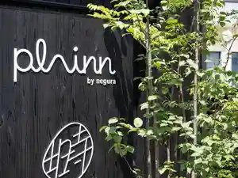
大平屋旅館
Oohira Ya Ryokan
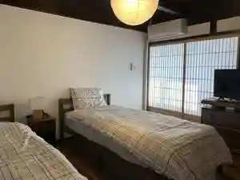
みわとそら
Miwatosora
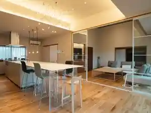
ヴィラ・フロレスタ
ヴィラ・フロレスタ
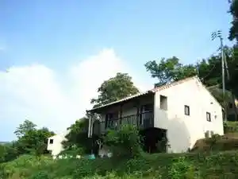
真玉温泉 山翆荘 スパランド真玉
Matama Onsen Yama Sui Sou Suparando Matama
旅庵 蕗薹
Tabi Iori Fuki Aburana
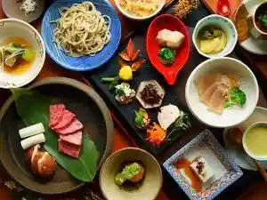
豊後高田市長崎鼻ヴィラリゾート
Bungotakada Shichou Saki Hana Virarizooto
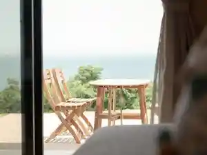
長崎鼻ビーチリゾート
Nagasaki Hana Biichirizooto
海浜旅庵 しおじ
Kaihin Tabi Iori Shioji
Sights
Matama (Matama) Coast no Yuhi
Kumano Magai Hotoke (Kuma no Magaibutsu)
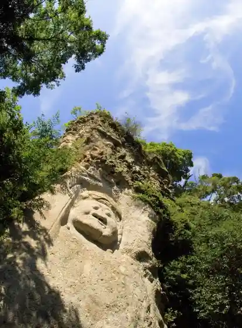
Hana to Ato no Misaki Nagasaki Hana
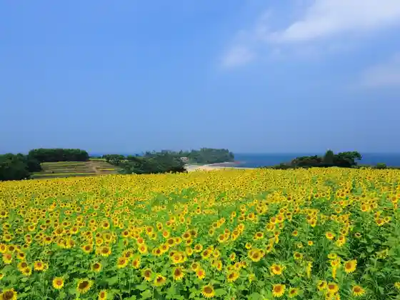
Kunisaki Rokugo Onsen Hana Iro Onsen
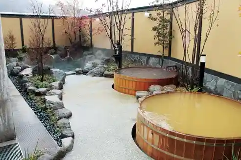
Chiimurabogyararii Showa no Town
Kaimon Onsen
Matama Coast Koi Kano ♡ Yuhi Terasu
Koi Kano Tonneru
Nagasaki Hana Beach Resort
Ebisu Tani (Ebisudani) Onsen
Fukinshitsu Na Shizen to Nin no Art Museum
Ju Wari Soba Etsu
Kakaji (Kakaji) Tsurizumu
Kakaji (Kakaji) Seishonen no Ie
Bungotakada (Showa no Town)
Koi Kano (Koikana) Rodo
Choan Tera
Fuki Tera (Fukiji)
Showa Roman Kura
Showa no Town (Retorofasshon Kan)
Chiimurabogyararii Matama Coast
Matama Onsen Yama Sui So
Sennin Yu
Tsubaki Do
no Kaisambutsu Chokubai Tokoro San Uesutan
Dento Bunka Densho Shisetsu Oni Kai (Onie) Village
Ryokan Umeno Ya
Awashima Sha (Awashimasha) Awashima Park
Tashibu So (Tashibu no Sho)
Maki Odo (Makiodo)
Nagasaki Hana Resort Campground Beach
Ten Nen Terakawa Naka Fudo (Tennenjikawanakafudo)
Ten Nen Tera
Ebisu Tani (Ebisudani)
Sato no Eki Nami Ishi (Nameshi) Dam Guriin Land (Kotton Village)
Mudo (Mudo) Tera
O Koyomi (Oreki) Tera
Ryozen (Reisen) Tera
Jisso In
Asahi Kannon Yuhi Kannon
Anai Ko Kannon
Nabeyama Magai Hotoke San no Miya no Kei
Motomiya (Motomiya) Magai Hotoke
Bungotakada Yakusho